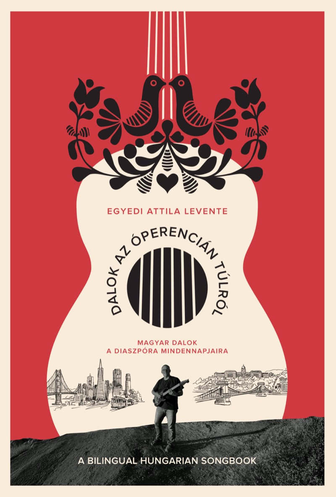

Kétnyelvű magyar daloskönyv
Dalok az Óperencián túlról
Legyen dal minden alkalomra — és mindenki kísérhesse.
- 63 dal
- Akkord minden ütem fölött
- Kottatartón nyitva marad
- Kezdő ukuleletanfolyam

Nem a polcra készült, hanem a kottatartóra
63 gyerekdal, népdal és ünnepi dal.
- Akkord minden ütem fölött — gitárra, ukulelére, zongorára, harmonikára is.
- Minden magyarázat két nyelven szól (maguk a dalok magyarul).
- A spirálkötésnek köszönhetően kottatartón fekve nyitva marad.
- Egy kezdő ukuleletanfolyam is van benne.
- Minden dala jogtiszta.

Kinek szól a könyv?
Együtt éneklünk
Család, cserkészet, tábor, templom: dal az év minden alkalmára. A dalok magyarul szólnak — minden magyarázat angolul is megvan, hogy a vegyes családok és csoportok is bekapcsolódhassanak.
A könyvrőlMég sosem játszottam hangszeren
Az ukulele-gyorstalpaló nulláról az első tábortűzi dalig visz.
Kezdd a hangolássalMár játszom — repertoárt keresek
Akkord minden ütem fölött, esztammagyarázat, és akkordtáblázat hat hangszerre — köztük kontrára.
Lapozz beleDal az év minden alkalmára
Ezek azok a dalok, amiket a kaliforniai magyar közösségek tényleg kérnek.
- Farsang
- Március 15.
- Anyák napja
- Apák napja
- Augusztus 20.
- Október 23.
- Mikulás
- Karácsony
- Újév
Hallgasd meg a dalokat
A könyv dalaiból készült felvételek a YouTube-csatornánkon szólnak.
További felvételek
Ajánlások
A magyar zene átível minden határon – nemzeti, kulturális, politikai, hangszeres, sőt még nyelvi korlátokon is.
— Magyar Kálmán
Ez a hiánypótló zenei tankönyv zseniális egyszerűséggel vezeti be az olvasót az ukulelejáték és a magyar nyelvű népi és más dalok világába.
— Keszei Etelka
A könyv eddig balkáni zenei táborban, néptáncfesztiválokon, cserkészcsapatoknál és hétvégi magyar iskolákban talált gazdára szerte a nyugati parton.
Három kérdés, amit mindig megkapunk
Ukulelekönyv ez?
Nem — daloskönyv bármilyen akkordkísérő hangszerre. Az ukulelefejezet azért van benne, hogy aki még sosem játszott, egy tábor alatt bekapcsolódhasson.
Kell hozzá gitár?
Az akkordjelek működnek gitáron, ukulelén, zongorán, harmonikán — a könyv végén pedig hat hangszer akkordtáblázata van, köztük a háromhúros kontráé.
Hogyan válogattuk a dalokat?
Tíz év kérései alapján: ezek azok a dalok, amiket a kaliforniai magyar közösségek tényleg kérnek — minden alkalomra jut egy, és mindegyik jogtiszta.
Nem csak gitárra. Nem csak ukulelekönyv. Daloskönyv mindenkinek, aki játszani vagy énekelni szeretne.
Megveszem — 35 USD35 USD + 6 USD szállítás az USA-n belül